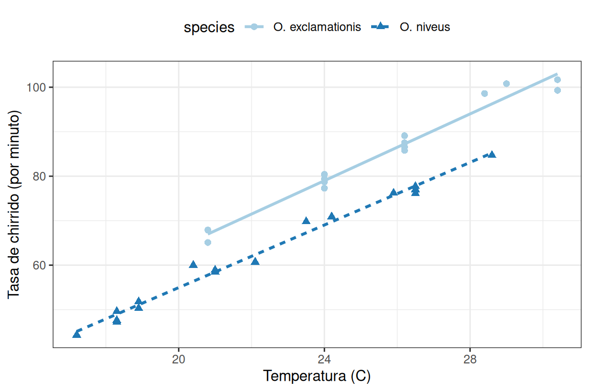
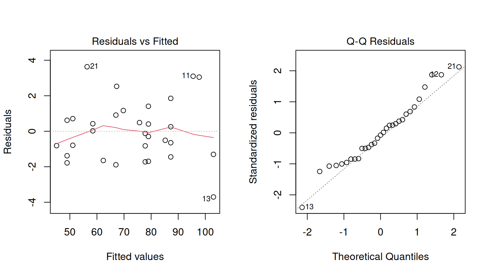
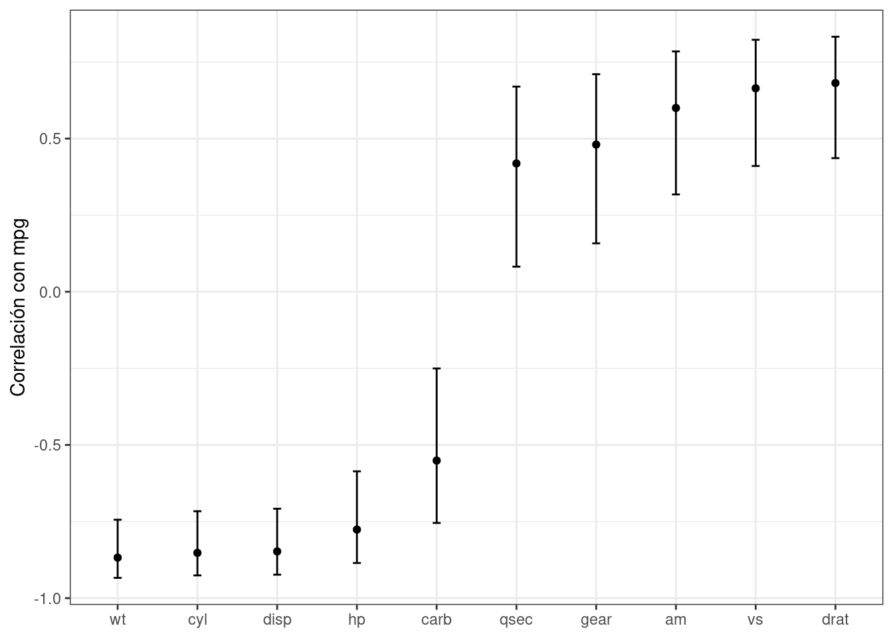

library(tidyverse)
data(crickets, package = "modeldata")
names(crickets)
# Grápica de la temperatura en el eje x, la tasa de chirrido en el eje y. Los elementos
# de la gráfica se colorean de forma diferente para cada especie:
ggplot(crickets,
aes(x = temp, y = rate, color = species, pch = species, lty = species)) +
# Traza puntos para cada punto de datos y color por especie.
geom_point(size = 2) +
# Muestra un ajuste de modelo lineal simple creado por separado para cada especie:
geom_smooth(method = lm, se = FALSE, alpha = 0.5) +
scale_color_brewer(palette = "Paired") +
labs(x = "Temperatura (C)", y = "Tasa de chirrido (por minuto)")3 Una Revisión De Los Fundamentos Del Modelado Con R
Antes de describir cómo usar tidymodels para aplicar principios de datos ordenados para construir modelos con R, revisemos cómo se crean, entrenan y usan los modelos en el lenguaje R central (a menudo llamado “R base”). Este capítulo es una breve ilustración de las convenciones básicas del lenguaje que es importante tener en cuenta incluso si nunca utiliza base R para modelos. Este capítulo no es exhaustivo, pero proporciona a los lectores (especialmente aquellos nuevos en R) los motivos básicos más utilizados.
El lenguaje S, en el que se basa R, ha tenido un rico entorno de análisis de datos desde la publicación de Chambers y Hastie (1992) (comúnmente conocido como El Libro Blanco). Esta versión de S introdujo componentes de infraestructura estándar familiares para los usuarios de R hoy en día, como fórmulas de modelos simbólicos, matrices de modelos y marcos de datos, así como métodos de programación estándar orientados a objetos para el análisis de datos. Estas interfaces de usuario no han cambiado sustancialmente desde entonces.
3.1 Un Ejemplo
Para demostrar algunos fundamentos del modelado en base R, usemos datos experimentales de McDonald (2009), a través de Mangiafico (2015), sobre la relación entre la temperatura ambiente y la tasa de chirridos de los grillos por minuto. Se recolectaron datos para dos especies: O. exclamationis y O. niveus. Los datos están contenidos en un marco de datos llamado “crickets” (grillos en español) con un total de puntos de datos “r nrow(crickets)”. Estos datos se muestran en Figura 3.1 usando el siguiente código ggplot2.
## [1] "species" "temp" "rate"

Los datos muestran tendencias bastante lineales para cada especie. Para una temperatura dada, O. exclamationis parece chirriar más por minuto que las otras especies. Para un modelo inferencial, los investigadores podrían haber especificado las siguientes hipótesis nulas antes de ver los datos:
La temperatura no tiene ningún efecto sobre la tasa de chirrido.
No hay diferencias entre la tasa de chirrido de las especies.
Puede haber algún valor científico o práctico en predecir la tasa de chirrido, pero en este ejemplo nos centraremos en la inferencia.
Para ajustar un modelo lineal ordinario en R, se usa comúnmente la función lm(). Los argumentos importantes de esta función son una fórmula modelo y un marco de datos que contiene los datos. La fórmula es simbólica. Por ejemplo, la fórmula simple:
rate ~ tempespecifica que la tasa de chirrido es el resultado (ya que está en el lado izquierdo de la tilde ~) y que el valor de la temperatura es el predictor.1 Supongamos que los datos contienen la hora del día en el que se obtuvieron las medidas en una columna llamada hora. La formula:
rate ~ temp + timeno sumaría los valores de tiempo y temperatura. Esta fórmula representaría simbólicamente que la temperatura y el tiempo deben agregarse como efectos principales separados al modelo. Un efecto principal es un término del modelo que contiene una única variable predictiva.
No hay mediciones de tiempo en estos datos pero las especies se pueden agregar al modelo de la misma manera:
rate ~ temp + speciesLa especie no es una variable cuantitativa; en el marco de datos, se representa como una columna de factor con niveles "O. exclamationis" y "O. niveus". La gran mayoría de las funciones del modelo no pueden operar con datos no numéricos. Para las especies, el modelo necesita codificar los datos de las especies en un formato numérico. El enfoque más común es utilizar variables indicadoras (también conocidas como variables ficticias) en lugar de los valores cualitativos originales. En este caso, dado que la especie tiene dos valores posibles, la fórmula del modelo codificará automáticamente esta columna como numérica agregando una nueva columna que tiene un valor de cero cuando la especie es "O. exclamationis" y un valor de uno cuando la especie es "O. niveus". La maquinaria de fórmulas subyacente convierte automáticamente estos valores para el conjunto de datos utilizado para crear el modelo, así como para cualquier punto de datos nuevo (por ejemplo, cuando el modelo se utiliza para predicción).
Supongamos que hubiera cinco especies en lugar de dos. La fórmula del modelo, en este caso, crearía cuatro columnas binarias que son indicadores binarios para cuatro de las especies. El nivel de referencia del factor (es decir, el primer nivel) siempre se deja fuera del conjunto de predictores. La idea es que, si se conocen los valores de las cuatro variables indicadoras, se pueda determinar el valor de la especie. Analizamos las variables de los indicadores binarios con más detalle en la Sección 8.4.1.
La fórmula del modelo rate ~ temp + species crea un modelo con diferentes intersecciones en el eje y para cada especie; las pendientes de las líneas de regresión también podrían ser diferentes para cada especie. Para adaptarse a esta estructura, se puede agregar un término de interacción al modelo. Esto se puede especificar de varias maneras diferentes, y la más básica utiliza los dos puntos:
rate ~ temp + species + temp:species
# Se puede utilizar un atajo para expandir todas las interacciones que contienen
# dos variables:
rate ~ (temp + species) ^ 2
# Otro atajo para ampliar los factores para incluir todos las posibles
# interacciones (equivalentes para este ejemplo):
rate ~ temp * speciesAdemás de la conveniencia de crear variables indicadoras automáticamente, la fórmula ofrece algunas otras sutilezas:
Las funciones en línea se pueden utilizar en la fórmula. Por ejemplo, para utilizar el registro natural de la temperatura, podemos crear la fórmula
rate ~ log(temp). Dado que la fórmula es simbólica por defecto, la matemática literal también se puede aplicar a los predictores usando la función de identidadI(). Para usar unidades Fahrenheit, la fórmula podría serrate ~ I( (temp * 9/5) + 32 )para convertir de Celsius.R tiene muchas funciones que son útiles dentro de las fórmulas. Por ejemplo, “poly(x, 3)” agrega términos lineales, cuadráticos y cúbicos para “x” al modelo como efectos principales. El paquete splines también tiene varias funciones para crear términos spline no lineales en la fórmula.
Para conjuntos de datos donde hay muchos predictores, el acceso directo al período está disponible. El punto representa los efectos principales para todas las columnas que no están en el lado izquierdo de la tilde. El uso de
~ (.)^3agregaría efectos principales, así como todas las interacciones de dos y tres variables, al modelo.
Volviendo a nuestros grillos cantando, usemos un modelo de interacción bidireccional. En este libro, utilizamos el sufijo _fit para objetos R que son modelos ajustados.
interaction_fit <- lm(rate ~ (temp + species)^2, data = crickets)
# Para imprimir un breve resumen del modelo:
interaction_fit
##
## Call:
## lm(formula = rate ~ (temp + species)^2, data = crickets)
##
## Coefficients:
## (Intercept) temp speciesO. niveus
## -11.041 3.751 -4.348
## temp:speciesO. niveus
## -0.234Este resultado es un poco difícil de leer. Para las variables indicadoras de especies, R combina el nombre de la variable (species) con el nivel del factor (O. niveus) sin delimitador.
Antes de entrar en resultados inferenciales para este modelo, se debe evaluar el ajuste mediante gráficos de diagnóstico. Podemos usar el método plot() para objetos lm. Este método produce un conjunto de cuatro gráficos para el objeto, cada uno de los cuales muestra diferentes aspectos del ajuste, como se muestra en Figura 3.2.
# Coloca dos gráficas una juunto a la otra:
par(mfrow = c(1, 2))
# Muestra residuos frente a valores previstos:
plot(interaction_fit, which = 1)
# Una gráfica de cuantiles normales sobre los residuos:
plot(interaction_fit, which = 2)

Cuando se trata de los detalles técnicos de la evaluación de expresiones, R es perezoso (en lugar de entusiasta). Esto significa que las funciones de ajuste del modelo normalmente calculan las cantidades mínimas posibles en el último momento posible. Por ejemplo, si está interesado en la tabla de coeficientes para cada término del modelo, esto no se calcula automáticamente con el modelo, sino que se calcula mediante el método summary().
Nuestra siguiente tarea con los grillos es evaluar si es necesaria la inclusión del término de interacción. El enfoque más apropiado para este modelo es recalcular el modelo sin el término de interacción y utilizar el método anova().
# Montar un modelo reducido:
main_effect_fit <- lm(rate ~ temp + species, data = crickets)
# Comparar los modelos
anova(main_effect_fit, interaction_fit)
## Analysis of Variance Table
##
## Model 1: rate ~ temp + species
## Model 2: rate ~ (temp + species)^2
## Res.Df RSS Df Sum of Sq F Pr(>F)
## 1 28 89.3
## 2 27 85.1 1 4.28 1.36 0.25Esta prueba estadística genera un valor p de 0.25. Esto implica que falta evidencia contra la hipótesis nula de que el modelo no necesita el término de interacción. Por esta razón, realizaremos más análisis del modelo sin la interacción.
Los gráficos residuales deben reevaluarse para asegurarnos de que nuestros supuestos teóricos sean lo suficientemente válidos como para confiar en los valores p producidos por el modelo (los gráficos no se muestran aquí, pero alerta de spoiler: lo son).
Podemos usar el método summary() para inspeccionar los coeficientes, errores estándar y valores p de cada término del modelo:
summary(main_effect_fit)
##
## Call:
## lm(formula = rate ~ temp + species, data = crickets)
##
## Residuals:
## Min 1Q Median 3Q Max
## -3.013 -1.130 -0.391 0.965 3.780
##
## Coefficients:
## Estimate Std. Error t value Pr(>|t|)
## (Intercept) -7.2109 2.5509 -2.83 0.0086 **
## temp 3.6028 0.0973 37.03 < 2e-16 ***
## speciesO. niveus -10.0653 0.7353 -13.69 6.3e-14 ***
## ---
## Signif. codes: 0 '***' 0.001 '**' 0.01 '*' 0.05 '.' 0.1 ' ' 1
##
## Residual standard error: 1.79 on 28 degrees of freedom
## Multiple R-squared: 0.99, Adjusted R-squared: 0.989
## F-statistic: 1.33e+03 on 2 and 28 DF, p-value: <2e-16La tasa de chirrido para cada especie aumenta en 3.6 chirridos a medida que la temperatura aumenta en un solo grado. Este término muestra una fuerte significación estadística como lo demuestra el valor p. El término de especie tiene un valor de -10.07. Esto indica que, en todos los valores de temperatura, O. niveus tiene una frecuencia de chirrido que es aproximadamente 10 menos chirridos por minuto que O. exclamationis. De manera similar al término de temperatura, el efecto de especie se asocia con un valor p muy pequeño.
El único problema en este análisis es el valor de la intersección. Indica que a 0° C, hay chirridos negativos por minuto para ambas especies. Si bien esto no tiene sentido, los datos solo llegan a 17.2° C e interpretar el modelo a 0° C sería una extrapolación. Esta sería una mala idea. Dicho esto, el ajuste del modelo es bueno dentro del rango aplicable de los valores de temperatura; las conclusiones deben limitarse al rango de temperatura observado.
Si necesitáramos estimar la tasa de chirrido a una temperatura que no se observó en el experimento, podríamos usar el método predecit(). Toma el objeto modelo y un marco de datos de nuevos valores para la predicción. Por ejemplo, el modelo estima la tasa de chirrido para O. exclamationis para temperaturas entre 15° C y 20° C se puede calcular mediante:
new_values <- data.frame(species = "O. exclamationis", temp = 15:20)
predict(main_effect_fit, new_values)
## 1 2 3 4 5 6
## 46.83 50.43 54.04 57.64 61.24 64.84Tenga en cuenta que el valor no numérico de species se pasa al método de predicción, a diferencia de la variable indicadora binaria numérica.
Si bien este análisis obviamente no ha sido una demostración exhaustiva de las capacidades de modelado de R, sí resalta algunas características importantes para el resto de este libro:
El lenguaje tiene una sintaxis expresiva para especificar términos de modelo tanto para modelos simples como para modelos bastante complejos.
El método de la fórmula R tiene muchas ventajas para el modelado que también se aplican a datos nuevos cuando se generan predicciones.
Existen numerosas funciones auxiliares (por ejemplo,
anova(),summary()ypredict()) que puede utilizar para realizar cálculos específicos después de crear el modelo ajustado.
Finalmente, como se mencionó anteriormente, este marco se publicó por primera vez en 1992. La mayoría de estas ideas y métodos se desarrollaron en ese período, pero siguen siendo notablemente relevantes hasta el día de hoy. Destaca que el lenguaje S y, por extensión, R, ha sido diseñado para el análisis de datos desde sus inicios.
3.2 ¿Qué Hace La Fórmula R?
Muchos paquetes de modelado utilizan la fórmula del modelo R. Suele tener múltiples propósitos:
La fórmula define las columnas que utiliza el modelo.
La maquinaria R estándar utiliza la fórmula para codificar las columnas en un formato apropiado.
Los roles de las columnas están definidos por la fórmula.
En su mayor parte, la comprensión de los profesionales sobre lo que hace la fórmula está dominada por el último propósito. Nuestro enfoque al escribir una fórmula suele ser declarar cómo se deben usar las columnas. Por ejemplo, la especificación anterior que analizamos configura predictores que se utilizarán de una manera específica:
(temp + species)^2Nuestro enfoque, al ver esto, es que hay dos predictores y el modelo debe contener sus efectos principales y las interacciones bidireccionales. Sin embargo, esta fórmula también implica que, dado que species es un factor, también se deben crear columnas de variables indicadoras para este predictor (ver Sección 8.4.1) y multiplicar esas columnas por la columna temp para crear el interacciones. Esta transformación representa nuestro segundo punto sobre codificación; la fórmula también define cómo se codifica cada columna y puede crear columnas adicionales que no están en los datos originales.
Este es un punto importante que surgirá varias veces en este texto, especialmente cuando analicemos la ingeniería de funciones más compleja en el Capítulo 8 y más allá. La fórmula en R tiene algunas limitaciones y nuestros enfoques para superarlas se enfrentan a los tres aspectos.
3.3 ¿Por Qué El Orden Es Importante Para Modelar?
Uno de los puntos fuertes de R es que anima a los desarrolladores a crear una interfaz de usuario que se ajuste a sus necesidades. A modo de ejemplo, aquí se muestran tres métodos comunes para crear un diagrama de dispersión de dos variables numéricas en un marco de datos llamado plot_data:
plot(plot_data$x, plot_data$y)
library(lattice)
xyplot(y ~ x, data = plot_data)
library(ggplot2)
ggplot(plot_data, aes(x = x, y = y)) + geom_point()En estos tres casos, grupos separados de desarrolladores idearon tres interfaces distintas para la misma tarea. Cada uno tiene ventajas y desventajas.
En comparación, la Guía del desarrollador de Python defiende la noción de que, al abordar un problema:
“Debería haber una, y preferiblemente sólo una, manera obvia de hacerlo.”
R es bastante diferente de Python a este respecto. Una ventaja de la diversidad de interfaces de R es que puede evolucionar con el tiempo y adaptarse a diferentes necesidades de diferentes usuarios.
Desafortunadamente, parte de la diversidad sintáctica se debe a un enfoque en las necesidades de la persona que desarrolla el código en lugar de las necesidades de la persona que usa el código. Las inconsistencias entre paquetes pueden ser un obstáculo para los usuarios de R.
Suponga que su proyecto de modelado tiene un resultado con dos clases. Existe una variedad de modelos estadísticos y de aprendizaje automático entre los que puede elegir. Para producir una estimación de probabilidad de clase para cada muestra, es común que una función de modelo tenga un método predict() correspondiente. Sin embargo, existe una heterogeneidad significativa en los valores de los argumentos utilizados por esos métodos para hacer predicciones de probabilidad de clase; esta heterogeneidad puede resultar difícil de navegar incluso para los usuarios experimentados. En Tabla 3.1 se muestra una muestra de estos valores de argumentos para diferentes modelos.
| Función | Paquete | Código |
|---|---|---|
| lda() | MASS | predict(object) |
| glm() | stats | predict(object, type = "response") |
| gbm() | gbm | predict(object, type = "response", n.trees) |
| mda() | mda | predict(object, type = "posterior") |
| rpart() | rpart | predict(object, type = "prob") |
| various | RWeka | predict(object, type = "probability") |
| logitboost() | LogitBoost | predict(object, type = "raw", nIter) |
| pamr.train() | pamr | pamr.predict(object, type = "posterior") |
Tenga en cuenta que el último ejemplo tiene una función personalizada para hacer predicciones en lugar de utilizar la interfaz predict() más común (el método genérico predict()). Esta falta de coherencia es una barrera para el uso diario de R para modelado.
Como otro ejemplo de imprevisibilidad, el lenguaje R tiene convenciones para datos faltantes que se manejan de manera inconsistente. La regla general es que los datos faltantes propagan más datos faltantes; el promedio de un conjunto de valores al que le falta un punto de datos también falta, y así sucesivamente. Cuando los modelos hacen predicciones, la gran mayoría requiere que todos los predictores tengan valores completos. Hay varias opciones integradas en R en este punto con la función genérica na.action(). Esto establece la política sobre cómo debe comportarse una función si faltan valores. Las dos políticas más comunes son na.fail() y na.omit(). El primero produce un error si hay datos faltantes, mientras que el segundo elimina los datos faltantes antes de los cálculos mediante eliminación entre mayúsculas y minúsculas. De nuestro ejemplo anterior:
# Añade un valor faltante al conjunto de predicción
new_values$temp[1] <- NA
# El método de predicción para `lm` por defecto es `na.pass`:
predict(main_effect_fit, new_values)
## 1 2 3 4 5 6
## NA 50.43 54.04 57.64 61.24 64.84
# Alternativamente
predict(main_effect_fit, new_values, na.action = na.fail)
## Error in na.fail.default(structure(list(temp = c(NA, 16L, 17L, 18L, 19L, : missing values in object
predict(main_effect_fit, new_values, na.action = na.omit)
## 2 3 4 5 6
## 50.43 54.04 57.64 61.24 64.84Desde el punto de vista del usuario, na.omit() puede ser problemático. En nuestro ejemplo, new_values tiene filas 6 pero solo 5 se devolvería con na.omit(). Para ajustar esto, el usuario tendría que determinar qué fila tenía el valor faltante e intercalar un valor faltante en el lugar apropiado si las predicciones se fusionaran en new_values.2 Si bien es poco común que una función de predicción utiliza na.omit() como política de datos faltantes, esto ocurre. Los usuarios que han determinado esto como la causa de un error en su código lo encuentran bastante memorable.
Para resolver los problemas de uso descritos aquí, los paquetes tidymodels tienen un conjunto de objetivos de diseño. La mayoría de los objetivos de diseño de tidymodels se incluyen en la rúbrica existente de “Diseño para humanos” de tidyverse (Wickham et al. 2019), pero con aplicaciones específicas para código de modelado. Hay algunos objetivos de diseño de tidymodels adicionales que complementan los del tidyverse. Algunos ejemplos:
R tiene excelentes capacidades para la programación orientada a objetos, y las usamos en lugar de crear nuevos nombres de funciones (como una nueva función hipotética
predict_samples()).Los valores predeterminados sensatos son muy importantes. Además, las funciones no deberían tener argumentos predeterminados cuando es más apropiado obligar al usuario a tomar una decisión (por ejemplo, el argumento del nombre del archivo para
read_csv()).De manera similar, los valores de los argumentos cuyo valor predeterminado pueda derivarse de los datos deberían serlo. Por ejemplo, para
glm(), el argumentofamilypodría verificar el tipo de datos en el resultado y, si no se proporcionó ningunafamily, se podría determinar internamente un valor predeterminado.Las funciones deben tomar las estructuras de datos que tienen los usuarios en lugar de la estructura de datos que desean los desarrolladores. Por ejemplo, la única interfaz de una función modelo no debe limitarse a matrices. Con frecuencia, los usuarios tendrán predictores no numéricos, como factores.
Muchas de estas ideas se describen en las pautas de tidymodels para la implementación de modelos.3 En los capítulos siguientes, ilustraremos ejemplos de problemas existentes, junto con sus soluciones.
Algunos paquetes R existentes proporcionan una interfaz unificada para armonizar estas API de modelado heterogéneas, como caret y mlr. El marco tidymodels es similar a estos en cuanto a que adopta una unificación de la interfaz de funciones, así como también exige coherencia en los nombres de las funciones y los valores de retorno. Se diferencia en sus obstinados objetivos de diseño y en su implementación de modelado, que se analizan en detalle a lo largo de este libro.
La función broom::tidy(), que utilizamos a lo largo de este libro, es otra herramienta para estandarizar la estructura de los objetos R. Puede devolver muchos tipos de objetos R en un formato más utilizable. Por ejemplo, supongamos que los predictores se seleccionan en función de su correlación con la columna de resultados. Usando purrr::map(), los resultados de cor.test() se pueden devolver en una lista para cada predictor:
corr_res <- map(mtcars %>% select(-mpg), cor.test, y = mtcars$mpg)
# El primero de diez resultados en el vector:
corr_res[[1]]
##
## Pearson's product-moment correlation
##
## data: .x[[i]] and mtcars$mpg
## t = -8.9, df = 30, p-value = 6e-10
## alternative hypothesis: true correlation is not equal to 0
## 95 percent confidence interval:
## -0.9258 -0.7163
## sample estimates:
## cor
## -0.8522Si queremos utilizar estos resultados en una gráfica, el formato estándar de los resultados de las pruebas de hipótesis no es muy útil. El método tidy() puede devolver esto como un tibble con nombres estandarizados:
library(broom)
tidy(corr_res[[1]])
## # A tibble: 1 × 8
## estimate statistic p.value parameter conf.low conf.high method alternative
## <dbl> <dbl> <dbl> <int> <dbl> <dbl> <chr> <chr>
## 1 -0.852 -8.92 6.11e-10 30 -0.926 -0.716 Pearson's pr… two.sidedEstos resultados se pueden “apilar” y agregar a un ggplot(), como se muestra en Figura 3.3.
corr_res %>%
# Convierte cada uno a un formato ordenado; `map_dfr()` apila los marcos de datos
map_dfr(tidy, .id = "predictor") %>%
ggplot(aes(x = fct_reorder(predictor, estimate))) +
geom_point(aes(y = estimate)) +
geom_errorbar(aes(ymin = conf.low, ymax = conf.high), width = .1) +
labs(x = NULL, y = "Correlación con mpg")

mtcars
Es posible crear un gráfico de este tipo utilizando las funciones básicas del lenguaje R, pero reformatear automáticamente los resultados genera un código más conciso con menos posibilidades de errores.
3.4 Combinando Modelos Base R Y Tidyverse
Las funciones de modelado de R del lenguaje central u otros paquetes de R se pueden usar junto con tidyverse, especialmente con los paquetes dplyr, purrr y tidyr. Por ejemplo, si quisiéramos ajustar modelos separados para cada especie de grillo, primero podemos desglosar los datos del grillo en esta columna usando dplyr::group_nest():
split_by_species <-
crickets %>%
group_nest(species)
split_by_species
## # A tibble: 2 × 2
## species data
## <fct> <list<tibble[,2]>>
## 1 O. exclamationis [14 × 2]
## 2 O. niveus [17 × 2]La columna data contiene las columnas rate y temp de crickets en una columna de lista. A partir de esto, la función purrr::map() puede crear modelos individuales para cada especie:
model_by_species <-
split_by_species %>%
mutate(model = map(data, ~ lm(rate ~ temp, data = .x)))
model_by_species
## # A tibble: 2 × 3
## species data model
## <fct> <list<tibble[,2]>> <list>
## 1 O. exclamationis [14 × 2] <lm>
## 2 O. niveus [17 × 2] <lm>Para recopilar los coeficientes de cada uno de estos modelos, use broom::tidy() para convertirlos a un formato de marco de datos consistente para que se puedan desanidar:
model_by_species %>%
mutate(coef = map(model, tidy)) %>%
select(species, coef) %>%
unnest(cols = c(coef))
## # A tibble: 4 × 6
## species term estimate std.error statistic p.value
## <fct> <chr> <dbl> <dbl> <dbl> <dbl>
## 1 O. exclamationis (Intercept) -11.0 4.77 -2.32 3.90e- 2
## 2 O. exclamationis temp 3.75 0.184 20.4 1.10e-10
## 3 O. niveus (Intercept) -15.4 2.35 -6.56 9.07e- 6
## 4 O. niveus temp 3.52 0.105 33.6 1.57e-15Las columnas de lista pueden ser muy poderosas en proyectos de modelado. Las columnas de lista proporcionan contenedores para cualquier tipo de objetos R, desde un modelo ajustado hasta la importante estructura del marco de datos.
3.5 El Metapaquete Tidymodels
El tidyverse (Capítulo 2) está diseñado como un conjunto de paquetes R modulares, cada uno con un alcance bastante limitado. El marco tidymodels sigue un diseño similar. Por ejemplo, el paquete rsample se centra en la división y el remuestreo de datos. Aunque los métodos de remuestreo son críticos para otras actividades de modelado (por ejemplo, medir el desempeño), residen en un solo paquete y las métricas de desempeño están contenidas en un paquete diferente e independiente, yardstick. Hay muchos beneficios al adoptar esta filosofía de paquetes modulares, desde una implementación de modelos menos inflada hasta un mantenimiento de paquetes más fluido.
La desventaja de esta filosofía es que hay muchos paquetes en el marco de tidymodels. Para compensar esto, el paquete tidymodels (que puedes considerar como un metapaquete como el paquete tidyverse) carga un conjunto central de paquetes tidymodels y tidyverse. Al cargar el paquete se muestran qué paquetes están adjuntos:
library(tidymodels)
## ── Attaching packages ─────────────────────────────────────────── tidymodels 1.2.0 ──
## ✔ dials 1.2.1 ✔ rsample 1.2.1
## ✔ infer 1.0.7 ✔ tune 1.2.1
## ✔ modeldata 1.3.0 ✔ workflows 1.1.4
## ✔ parsnip 1.2.1 ✔ workflowsets 1.1.0
## ✔ recipes 1.0.10 ✔ yardstick 1.3.1
## ── Conflicts ────────────────────────────────────────────── tidymodels_conflicts() ──
## ✖ scales::discard() masks purrr::discard()
## ✖ dplyr::filter() masks stats::filter()
## ✖ recipes::fixed() masks stringr::fixed()
## ✖ kableExtra::group_rows() masks dplyr::group_rows()
## ✖ dplyr::lag() masks stats::lag()
## ✖ yardstick::spec() masks readr::spec()
## ✖ recipes::step() masks stats::step()
## • Learn how to get started at https://www.tidymodels.org/start/Si ha utilizado tidyverse, notará algunos nombres familiares ya que algunos paquetes de tidyverse, como dplyr y ggplot2, se cargan junto con los paquetes tidymodels. Ya hemos dicho que el marco tidymodels aplica los principios de tidyverse al modelado, pero el marco tidymodels también se basa literalmente en algunos de los paquetes tidyverse más fundamentales, como estos.
La carga del metapaquete también muestra si hay conflictos de nombres de funciones con paquetes cargados previamente. Como ejemplo de un conflicto de nombres, antes de cargar tidymodels, al invocar la función filter() se ejecutará la función en el paquete stats. Después de cargar tidymodels, ejecutará la función dplyr del mismo nombre.
Hay algunas formas de manejar los conflictos de nombres. La función se puede llamar con su espacio de nombres (por ejemplo, stats::filter()). Esta no es una mala práctica, pero hace que el código sea menos legible.
Otra opción es utilizar el paquete conflicted. Podemos establecer una regla que permanezca vigente hasta el final de la sesión de R para garantizar que siempre se ejecute una función específica si no se proporciona ningún espacio de nombres en el código. Como ejemplo, si preferimos la versión dplyr de la función anterior:
library(conflicted)
conflict_prefer("filter", winner = "dplyr")Por conveniencia, tidymodels contiene una función que captura la mayoría de los conflictos de nombres comunes que podemos encontrar:
tidymodels_prefer(quiet = FALSE)
## [conflicted] Will prefer agua::refit over any other package.
## [conflicted] Will prefer dials::Laplace over any other package.
## [conflicted] Will prefer dials::max_rules over any other package.
## [conflicted] Will prefer dials::neighbors over any other package.
## [conflicted] Will prefer dials::prune over any other package.
## [conflicted] Will prefer dials::smoothness over any other package.
## [conflicted] Will prefer dplyr::collapse over any other package.
## [conflicted] Will prefer dplyr::combine over any other package.
## [conflicted] Will prefer dplyr::filter over any other package.
## [conflicted] Will prefer dplyr::rename over any other package.
## [conflicted] Will prefer dplyr::select over any other package.
## [conflicted] Will prefer dplyr::slice over any other package.
## [conflicted] Will prefer ggplot2::`%+%` over any other package.
## [conflicted] Will prefer ggplot2::margin over any other package.
## [conflicted] Will prefer parsnip::bart over any other package.
## [conflicted] Will prefer parsnip::fit over any other package.
## [conflicted] Will prefer parsnip::mars over any other package.
## [conflicted] Will prefer parsnip::pls over any other package.
## [conflicted] Will prefer purrr::cross over any other package.
## [conflicted] Will prefer purrr::invoke over any other package.
## [conflicted] Will prefer purrr::map over any other package.
## [conflicted] Will prefer recipes::discretize over any other package.
## [conflicted] Will prefer recipes::step over any other package.
## [conflicted] Will prefer rsample::populate over any other package.
## [conflicted] Will prefer scales::rescale over any other package.
## [conflicted] Will prefer themis::step_downsample over any other package.
## [conflicted] Will prefer themis::step_upsample over any other package.
## [conflicted] Will prefer tidyr::expand over any other package.
## [conflicted] Will prefer tidyr::extract over any other package.
## [conflicted] Will prefer tidyr::pack over any other package.
## [conflicted] Will prefer tidyr::unpack over any other package.
## [conflicted] Will prefer tune::parameters over any other package.
## [conflicted] Will prefer tune::tune over any other package.
## [conflicted] Will prefer yardstick::get_weights over any other package.
## [conflicted] Will prefer yardstick::precision over any other package.
## [conflicted] Will prefer yardstick::recall over any other package.
## [conflicted] Will prefer yardstick::spec over any other package.
## [conflicted] Will prefer recipes::update over Matrix::update.
## ── Conflicts ───────────────────────────────────────────────── tidymodels_prefer() ──Tenga en cuenta que el uso de esta función le permite optar por utilizar conflicted::conflict_prefer() para todos los conflictos de espacios de nombres, lo que convierte cada conflicto en un error y le obliga a elegir qué función utilizar. La función tidymodels::tidymodels_prefer() maneja los conflictos más comunes de las funciones de tidymodels, pero necesitarás manejar otros conflictos en tu sesión de R tú mismo.
3.6 Resumen Del Capítulo
Este capítulo revisó las convenciones básicas del lenguaje R para crear y usar modelos que son una base importante para el resto de este libro. El operador de fórmula es un aspecto expresivo e importante del ajuste de modelos en R y, a menudo, sirve para múltiples propósitos en funciones que no son de tidymodels. Los enfoques tradicionales de R para modelar tienen algunas limitaciones, especialmente cuando se trata de manejar y visualizar con fluidez los resultados del modelo. El metapaquete tidymodels aplica la filosofía de diseño tidyverse a los paquetes de modelado.
La mayoría de las funciones del modelo agregan implícitamente una columna de intersección.↩︎
Una política base R llamada
na.exclude()hace exactamente esto.↩︎https://tidymodels.github.io/model-implementation-principles↩︎